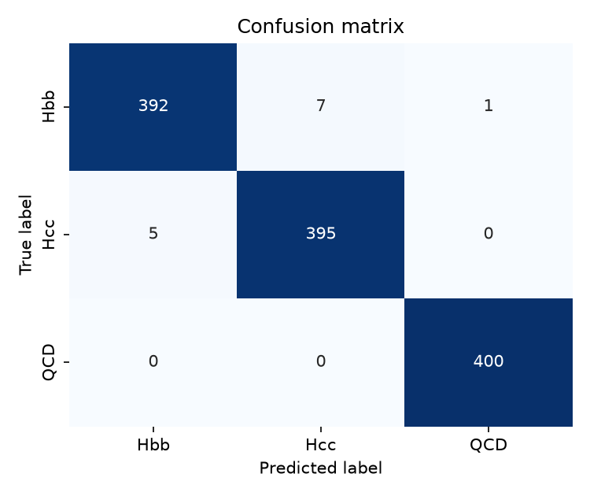
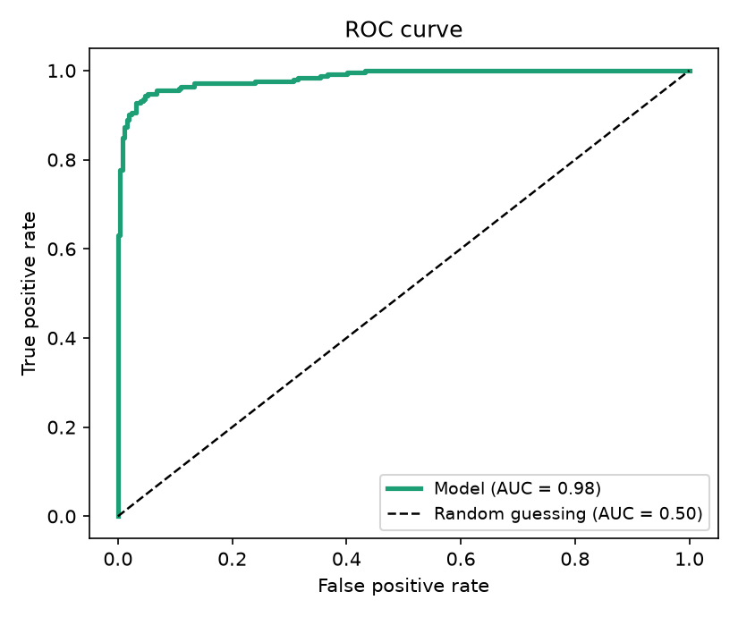
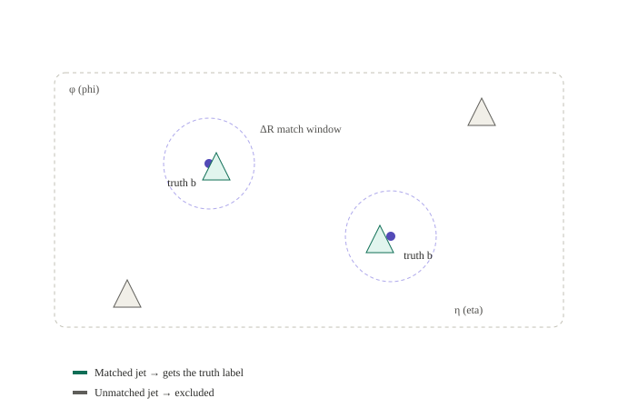

All in One View
Content from The Big Picture
Last updated on 2026-07-24 | Edit this page
Overview
Questions
- What physical process are we trying to classify when we look at a pair of jets from the CMS detector?
- Why is telling Hbb and Hcc jets apart harder than telling either of them apart from QCD background?
- Why does this problem call for machine learning instead of a hand-written rule?
- What does “mini” mean in MiniParT, and how does it relate to the full-scale Particle Transformer used in real CMS analyses?
Objectives
- Describe the physics goal of this lesson: classifying jet pairs as Hbb, Hcc, or QCD background.
- Explain why bottom-quark and charm-quark jets are hard to tell apart.
- Describe what “training” a model means, and why simulated data is needed to do it.
- Explain why a transformer architecture is used here, and what “mini” simplifies compared to the full-size version.
The question we’re trying to answer
Deep inside the CMS detector at CERN, protons collide at nearly the speed of light. (For background on the detector itself - its layers, subsystems, and how it records a collision - see the CMS Open Data Workshop’s detector lesson; this lesson picks up from there.) Occasionally, a collision briefly creates a Higgs boson - a heavy, short-lived particle that almost instantly decays into other particles. We care about three outcomes:
- The Higgs decays into two bottom quarks (“Hbb”).
- The Higgs decays into two charm quarks (“Hcc”).
- Nothing to do with a Higgs boson at all - just ordinary background, called “QCD.”
Quarks can’t fly around on their own: as they shoot away from the collision, they drag along a spray of other particles, called a jet. So what we actually see in the detector is jets, not quarks.
Our job: look at a pair of jets and guess whether they came from Hbb, Hcc, or QCD.
This is hard because bottom and charm quarks are cousins - both “heavy” quarks that behave similarly when they turn into jets. Telling their jets apart is a genuinely open problem in particle physics; telling either of them apart from ordinary QCD jets is easier. Keep those as two separate questions as you go through this lesson (“is this a Higgs event at all?” vs. “Hbb or Hcc?”) - you’ll see the distinction again in the confusion matrix in the evaluation episode.
Why use AI for this at all?
A human physicist can’t look at raw detector data and just “see” whether a jet came from a bottom quark, a charm quark, or nothing special. But each jet leaves subtle clues - how its energy splits between charged and neutral particles, how spread out it is, how many particles it contains. No single clue is a smoking gun, but combined, they carry real information. That’s exactly the kind of problem machine learning is good at: finding a pattern across many weak, noisy clues that no simple rule can capture.
What is “machine learning,” in one paragraph?
Instead of a person writing rules like “if energy fraction > 0.6 then it’s probably a bottom quark,” we show a computer program thousands of examples where we already know the right answer (because the data is simulated - see Finding the Truth Labels), and let it gradually adjust itself until it gets good at guessing correctly. That process is “training,” and the program doing the adjusting is the “model.”
Why a transformer, and why “mini”?
A transformer is a model that’s very good at looking at a set of things and figuring out how they relate to each other - famously used for understanding sentences, and also used in real CMS analyses to look at a set of jets. We only have two jets per event here, so this is a toy-sized version of the same idea used in professional particle physics AI - hence MiniParT (“mini Particle Transformer”).
It’s “mini” because: - It only looks at 2 jets at a time (real versions can handle 100+ particles per jet) - It only uses 10 simple numbers per jet (real versions use many more) - It’s small enough to train on a laptop in minutes, not hours
MiniParT trades away detail (raw particle-level information, larger networks, more jets per event) in exchange for being small enough to fully understand and train quickly. Real CMS analyses use the full-size Particle Transformer specifically because that extra detail helps with the hard Hbb-vs-Hcc problem - nothing about “mini” changes the physics goal, only how much information the model has to work with.
Roadmap
This lesson runs entirely in Google Colab, so the next episode covers setting up a Colab notebook and streaming CMS data directly from CERN. After that, the lesson builds MiniParT from scratch, step by step:
- Working in Google Colab - setting up Colab and streaming CMS Open Data directly, without downloading anything
- What Is a Jet? - the raw ingredients: 10 numbers per jet
- Finding the Truth Labels - how we know the “right answer” for training
- Preparing the Data - getting the numbers ready for a neural network
- Building MiniParT - the model itself, piece by piece
- Training the Model - how it actually learns
- Evaluating the Model - did it work, and how do we know?
- The Complete Code - every piece, assembled in one place
Each of episodes 2 through 8 follows the same shape: it opens with the complete code for that episode, ready to run in one go, followed by a line inviting you to read on. Copy that opening block into a new cell, run it, and then read the prose that follows - that’s where the actual teaching happens, walking back through the code you just ran one small idea at a time: why a feature is included, what a line of PyTorch is really doing, why a step needs to happen before another one. Where a code block produces visible output (a print statement, a shape, a plot), a block right underneath it shows what you should see.
These opening code blocks are cumulative: each one assumes every earlier episode’s opening block is already sitting in your Colab notebook, run in order. By the end of episode 7 your notebook is a trained MiniParT model, built up one episode at a time. Episode 9 then reprints the whole pipeline as a single reference, for whenever you want to see it all without the surrounding explanation.
How we’ll judge whether it worked
Later in this lesson, in Evaluating the Model, we check whether MiniParT actually learned something useful, using three tools covered there in full: a confusion matrix, ROC curves with AUC, and comparing the model’s internal representations with cosine similarity. Here’s a short preview of the first two, using illustrative data, so you recognize them when you meet them for real.
Confusion matrix, in brief: a grid where rows are the true class and columns are the model’s guess, so a perfect model has large numbers only on the diagonal.

This example shows good overall performance - most events land on the diagonal - but look closely and there’s visible confusion between two of the three classes (a handful of events leak each way between them), while the third class is separated from both almost perfectly. That exact pattern, two classes that are hard to tell apart plus a third that isn’t, is the situation this lesson’s Hbb/Hcc/QCD problem is actually in.
Generated with the same sklearn/seaborn/matplotlib code shown later in this lesson, using illustrative data - not this lesson’s actual results.
ROC curve and AUC, in brief: a curve tracing the tradeoff between catching more real signal and letting more background through, as the model’s confidence threshold slides from strict to loose; AUC condenses that whole curve into one number from 0 to 1.

A curve that hugs the top-left corner, away from the diagonal, is what strong separation looks like - catching signal while letting almost no background through. AUC boils that shape down to a single number: close to 1.0 means close to that corner, close to 0.5 means close to the diagonal, no better than a coin flip. The AUC near 1 shown here is illustrative, not this lesson’s actual number.
Generated with the same sklearn/seaborn/matplotlib code shown later in this lesson, using illustrative data - not this lesson’s actual results.
Dot product / cosine similarity, in brief: the model represents every event internally as a vector of 64 numbers, and cosine similarity compares two such vectors by direction alone, ignoring length - close to 1 means pointing the same way, close to -1 means opposite, close to 0 means unrelated. Evaluating the Model uses this to sanity-check what the model learned internally, independent of its final guess.
Question
Q: A friend says “the model just needs to learn to recognize a Higgs boson in the data.” What is slightly wrong with that, and what is the model actually being asked to do?
A: The model never sees a Higgs boson directly - it decays before reaching the detector. The model sees two jets and has to guess, from 10 summary numbers per jet, whether that pair is more consistent with Hbb, Hcc, or QCD. “Recognizing a Higgs boson” really means recognizing patterns in the jets it leaves behind.
- We’re teaching a computer to classify pairs of jets into Hbb / Hcc / QCD.
- We use simulated CMS data because it comes with a built-in answer key.
- MiniParT is a scaled-down version of a real particle physics AI architecture - small enough to fully understand, built the same way the real ones are.
Content from Working in Google Colab
Last updated on 2026-07-15 | Edit this page
Overview
Questions
- Which packages does this lesson need installed in Colab, and how do you install them?
- How do you read a CMS Open Data file directly from CERN without downloading it?
- Which three files does this lesson use, and how do you check a stream actually worked?
Objectives
- Install the packages this lesson needs inside a Google Colab notebook.
- Open a CMS Open Data file directly from CERN using
uproot, without downloading it first. - Identify the three files this lesson uses and confirm a stream opened correctly.
Installing the packages this lesson needs
If you followed Setup, you likely already
ran this install command once. Running it again here is a quick,
harmless verification that everything is still in place before moving on
- pip just confirms the packages are installed and does
nothing if they already are.
Colab comes with many common data science packages already installed,
including numpy, pandas,
matplotlib, seaborn,
scikit-learn, and torch. It does not come with
uproot (for reading ROOT files), fsspec-xrootd
(for streaming those files over the network - without it, opening a
root:// URL below fails immediately), awkward
(for handling data where different events can have different numbers of
particles), and vector (for particle four-vectors). Run
this in a Colab cell before anything else in this lesson:
Reading files directly from CERN
CMS Open Data files live on CERN’s servers and can be streamed
straight into uproot over a network protocol called xrootd,
instead of being downloaded first. Hand uproot a
root:// URL instead of a local file path, and it reads only
the parts of the file it actually needs:
PYTHON
import uproot
tthtobb_path = "root://eospublic.cern.ch//eos/opendata/cms/mc/RunIISummer20UL16NanoAODv9/ttHTobb_M125_TuneCP5_13TeV-powheg-pythia8/NANOAODSIM/106X_mcRun2_asymptotic_v17-v2/260000/410F948C-6956-2D45-A170-DE6431E02281.root"
tree = uproot.open(tthtobb_path)["Events"]
print("Number of events:", tree.num_entries)OUTPUT
Number of events: 174000Nothing here gets downloaded to disk - uproot streams
just the data it needs, which is why this works comfortably inside
Colab’s storage limits.
The three files this lesson uses
This lesson uses three CMS Open Data files, one each from the ttHTobb, ttHTocc, and QCD_bcToE records, all confirmed to contain well over 100,000 events:
| Dataset | CERN Open Data record | File used in this lesson | Confirmed events |
|---|---|---|---|
| ttHTobb (Hbb signal) | record 67645 | 410F948C-6956-2D45-A170-DE6431E02281.root |
174,000 |
| ttHTocc (Hcc signal) | record 67651 | 5C12D3AA-9311-B840-BB5D-4155D7FF66E4.root |
137,000 |
| QCD_bcToE (background) | record 63242 | A133135A-C83E-D245-846F-210C7AD2D29C.root |
345,045 |
Save each file’s full streaming path as a variable now, so you can reuse it in later episodes:
PYTHON
TTHTOBB_PATH = "root://eospublic.cern.ch//eos/opendata/cms/mc/RunIISummer20UL16NanoAODv9/ttHTobb_M125_TuneCP5_13TeV-powheg-pythia8/NANOAODSIM/106X_mcRun2_asymptotic_v17-v2/260000/410F948C-6956-2D45-A170-DE6431E02281.root"
TTHTOCC_PATH = "root://eospublic.cern.ch//eos/opendata/cms/mc/RunIISummer20UL16NanoAODv9/ttHTocc_M125_TuneCP5_13TeV-powheg-pythia8/NANOAODSIM/106X_mcRun2_asymptotic_v17-v1/50000/5C12D3AA-9311-B840-BB5D-4155D7FF66E4.root"
QCD_BCTOE_PATH = "root://eospublic.cern.ch//eos/opendata/cms/mc/RunIISummer20UL16NanoAODv9/QCD_Pt_80to170_bcToE_TuneCP5_13TeV_pythia8/NANOAODSIM/106X_mcRun2_asymptotic_v17-v2/270000/A133135A-C83E-D245-846F-210C7AD2D29C.root"- Colab does not preinstall
uproot,fsspec-xrootd,awkward, orvector; install them with!pip installbefore running anything else in this lesson. -
uproot.open()on aroot://URL streams a CMS file directly from CERN’s servers, without downloading it. - This lesson uses three specific files, one each from the ttHTobb, ttHTocc, and QCD_bcToE CERN Open Data records.
- Always check
tree.num_entriesafter opening a file - a much smaller count than expected means it’s the wrong file.
Content from The Complete Code
Last updated on 2026-07-24 | Edit this page
Overview
Questions
- Where can you find the complete MiniParT pipeline as a single, unbroken block of code, without the surrounding explanation?
- How do the pieces built up across the earlier episodes fit together end to end, from reading raw CMS files to plotting evaluation results?
Objectives
- Locate the complete MiniParT code pipeline in one place, for reference or for copying into a single notebook.
- Confirm that the code here matches, piece for piece, the code introduced and explained across the earlier episodes.
This is the complete MiniParT pipeline in one place, assembled from the previous episodes in this lesson. Read those episodes first if you want the explanations, this page is a pure reference.
Step 1: Imports and feature list
PYTHON
import uproot
import awkward as ak
import vector
import numpy as np
import torch
import torch.nn as nn
from torch.utils.data import TensorDataset, DataLoader
from sklearn.model_selection import train_test_split
from sklearn.preprocessing import StandardScaler
vector.register_awkward()
# We avoid DeepJet/DeepCSV variables as requested.
# Using kinematics + energy fractions + pileup/multiplicity info.
FEATURE_NAMES = [
'Jet_pt', 'Jet_eta', 'Jet_phi', 'Jet_mass',
'Jet_chHEF', 'Jet_neHEF', 'Jet_chEmEF', 'Jet_neEmEF',
'Jet_nConstituents', 'Jet_puId'
]
# Labels: 0 = Hbb, 1 = Hcc, 2 = QCD
# Streaming paths for the three validated CMS Open Data files this lesson
# uses (see "Working in Google Colab" for how these were confirmed).
TTHTOBB_PATH = "root://eospublic.cern.ch//eos/opendata/cms/mc/RunIISummer20UL16NanoAODv9/ttHTobb_M125_TuneCP5_13TeV-powheg-pythia8/NANOAODSIM/106X_mcRun2_asymptotic_v17-v2/260000/410F948C-6956-2D45-A170-DE6431E02281.root"
TTHTOCC_PATH = "root://eospublic.cern.ch//eos/opendata/cms/mc/RunIISummer20UL16NanoAODv9/ttHTocc_M125_TuneCP5_13TeV-powheg-pythia8/NANOAODSIM/106X_mcRun2_asymptotic_v17-v1/50000/5C12D3AA-9311-B840-BB5D-4155D7FF66E4.root"
QCD_BCTOE_PATH = "root://eospublic.cern.ch//eos/opendata/cms/mc/RunIISummer20UL16NanoAODv9/QCD_Pt_80to170_bcToE_TuneCP5_13TeV_pythia8/NANOAODSIM/106X_mcRun2_asymptotic_v17-v2/270000/A133135A-C83E-D245-846F-210C7AD2D29C.root"Step 2: Extracting features and matching truth labels
PYTHON
def delta_phi(phi1, phi2):
dphi = phi1 - phi2
return (dphi + np.pi) % (2*np.pi) - np.pi
def extract_features(filepath, label, is_signal=True, max_events=None):
tree = uproot.open(filepath)["Events"]
# Load required branches
branches = FEATURE_NAMES.copy()
if is_signal:
branches += [
"GenPart_pdgId", "GenPart_pt", "GenPart_eta",
"GenPart_phi", "GenPart_mass", "GenPart_genPartIdxMother"
]
events = tree.arrays(branches, entry_stop=max_events)
if is_signal:
# Determine target quark based on label (0: b-quark=5, 1: c-quark=4)
target_pdg = 5 if label == 0 else 4
mother_idx = events.GenPart_genPartIdxMother
valid = mother_idx >= 0
mother_pdg = ak.where(valid, events.GenPart_pdgId[mother_idx], -999)
is_higgs_dau = (abs(events.GenPart_pdgId) == target_pdg) & (mother_pdg == 25)
mask = ak.num(events.GenPart_pt[is_higgs_dau]) == 2
events = events[mask]
is_higgs_dau = is_higgs_dau[mask]
# Build 4-vectors
jets = ak.zip({
"pt": events.Jet_pt, "eta": events.Jet_eta,
"phi": events.Jet_phi, "mass": events.Jet_mass
}, with_name="Momentum4D")
dau = ak.zip({
"pt": events.GenPart_pt[is_higgs_dau], "eta": events.GenPart_eta[is_higgs_dau],
"phi": events.GenPart_phi[is_higgs_dau], "mass": events.GenPart_mass[is_higgs_dau]
}, with_name="Momentum4D")
d1, d2 = dau[:, 0], dau[:, 1]
# Match using dR < 0.4
dr1 = np.sqrt((jets.eta - d1.eta[:, None])**2 + delta_phi(jets.phi, d1.phi[:, None])**2)
dr2 = np.sqrt((jets.eta - d2.eta[:, None])**2 + delta_phi(jets.phi, d2.phi[:, None])**2)
matched = (dr1 < 0.4) | (dr2 < 0.4)
# Extract features for matched jets
matched_events = events[matched]
# Keep exactly 2 matched jets
mask_2jets = ak.num(matched_events.Jet_pt) == 2
final_events = matched_events[mask_2jets]
else:
# For QCD, require at least 2 jets and take the top 2 leading jets
mask_2jets = ak.num(events.Jet_pt) >= 2
events = events[mask_2jets]
# Slice to keep only the first 2 jets
final_events = events[:, :2]
# Stack features into a NumPy array of shape (N_events, 2_jets, N_features)
feature_list = []
for feat in FEATURE_NAMES:
# Fill missing values with 0 (e.g., puId might have NaNs depending on pt)
arr = ak.fill_none(final_events[feat], 0)
feature_list.append(ak.to_numpy(arr))
X = np.stack(feature_list, axis=-1)
y = np.full(X.shape[0], label)
print(f"Loaded label {label}: {X.shape[0]} events")
return X, yStep 3: Preparing the data
PYTHON
# Extract features (adjust max_events to None when ready for full training)
X_bb, y_bb = extract_features(TTHTOBB_PATH, label=0, is_signal=True, max_events=50000)
X_cc, y_cc = extract_features(TTHTOCC_PATH, label=1, is_signal=True, max_events=50000)
X_qcd, y_qcd = extract_features(QCD_BCTOE_PATH, label=2, is_signal=False, max_events=50000)
# Combine datasets
X = np.concatenate([X_bb, X_cc, X_qcd], axis=0)
y = np.concatenate([y_bb, y_cc, y_qcd], axis=0)
# Train/Test Split
X_train, X_test, y_train, y_test = train_test_split(X, y, test_size=0.2, random_state=42, stratify=y)
# Normalize features (Transformers are sensitive to scale)
# We flatten to (N*2, Features) to fit the scaler, then reshape back
scaler = StandardScaler()
X_train_flat = X_train.reshape(-1, len(FEATURE_NAMES))
X_test_flat = X_test.reshape(-1, len(FEATURE_NAMES))
X_train_scaled = scaler.fit_transform(X_train_flat).reshape(-1, 2, len(FEATURE_NAMES))
X_test_scaled = scaler.transform(X_test_flat).reshape(-1, 2, len(FEATURE_NAMES))
# Convert to PyTorch tensors
train_data = TensorDataset(torch.tensor(X_train_scaled, dtype=torch.float32), torch.tensor(y_train, dtype=torch.long))
test_data = TensorDataset(torch.tensor(X_test_scaled, dtype=torch.float32), torch.tensor(y_test, dtype=torch.long))
train_loader = DataLoader(train_data, batch_size=256, shuffle=True)
test_loader = DataLoader(test_data, batch_size=256, shuffle=False)OUTPUT
Loaded label 0: 36025 events
Loaded label 1: 37295 events
Loaded label 2: 50000 events(Approximate - the exact counts depend on the files read, but land in this ballpark; see Preparing the Data.)
Step 4: Building MiniParT
PYTHON
class MiniParT(nn.Module):
def __init__(self, input_dim, embed_dim=64, num_heads=4, hidden_dim=128, num_classes=3):
super(MiniParT, self).__init__()
# 1. Linear projection (Embedding)
self.embedding = nn.Linear(input_dim, embed_dim)
# 2. Transformer Encoder Layer (Self-Attention)
encoder_layer = nn.TransformerEncoderLayer(
d_model=embed_dim,
nhead=num_heads,
dim_feedforward=hidden_dim,
batch_first=True,
dropout=0.1
)
# Using just 2 layers for a "mini" model to keep local training fast
self.transformer = nn.TransformerEncoder(encoder_layer, num_layers=2)
# 3. Classification Head
self.mlp = nn.Sequential(
nn.Linear(embed_dim, hidden_dim),
nn.ReLU(),
nn.Dropout(0.1),
nn.Linear(hidden_dim, num_classes)
)
def forward(self, x):
# x shape: (Batch, Seq_Len=2, Features)
# Project features
x = self.embedding(x) # shape: (Batch, 2, embed_dim)
# Apply self-attention
x = self.transformer(x) # shape: (Batch, 2, embed_dim)
# Mean pooling over the sequence (the 2 jets)
x_pooled = x.mean(dim=1) # shape: (Batch, embed_dim)
# Classify
out = self.mlp(x_pooled) # shape: (Batch, num_classes)
return out
torch.manual_seed(42)
np.random.seed(42)
model = MiniParT(input_dim=len(FEATURE_NAMES))
print(model)OUTPUT
MiniParT(
(embedding): Linear(in_features=10, out_features=64, bias=True)
(transformer): TransformerEncoder(
(layers): ModuleList(
(0-1): 2 x TransformerEncoderLayer(
(self_attn): MultiheadAttention(
(out_proj): NonDynamicallyQuantizableLinear(in_features=64, out_features=64, bias=True)
)
(linear1): Linear(in_features=64, out_features=128, bias=True)
(dropout): Dropout(p=0.1, inplace=False)
(linear2): Linear(in_features=128, out_features=64, bias=True)
(norm1): LayerNorm((64,), eps=1e-05, elementwise_affine=True)
(norm2): LayerNorm((64,), eps=1e-05, elementwise_affine=True)
(dropout1): Dropout(p=0.1, inplace=False)
(dropout2): Dropout(p=0.1, inplace=False)
)
)
)
(mlp): Sequential(
(0): Linear(in_features=64, out_features=128, bias=True)
(1): ReLU()
(2): Dropout(p=0.1, inplace=False)
(3): Linear(in_features=128, out_features=3, bias=True)
)
)(Exact formatting can vary slightly by PyTorch version.)
Step 5: Training
PYTHON
device = torch.device("cuda" if torch.cuda.is_available() else "cpu")
model = model.to(device)
criterion = nn.CrossEntropyLoss()
optimizer = torch.optim.AdamW(model.parameters(), lr=1e-3, weight_decay=1e-4)
epochs = 10
for epoch in range(epochs):
model.train()
total_loss = 0
correct = 0
total = 0
for batch_x, batch_y in train_loader:
batch_x, batch_y = batch_x.to(device), batch_y.to(device)
optimizer.zero_grad()
outputs = model(batch_x)
loss = criterion(outputs, batch_y)
loss.backward()
optimizer.step()
total_loss += loss.item()
_, predicted = outputs.max(1)
total += batch_y.size(0)
correct += predicted.eq(batch_y).sum().item()
train_acc = 100. * correct / total
print(f"Epoch {epoch+1}/{epochs} | Loss: {total_loss/len(train_loader):.4f} | Train Acc: {train_acc:.2f}%")OUTPUT
Epoch 1/10 | Loss: 0.6823 | Train Acc: 65.98%
Epoch 2/10 | Loss: 0.6512 | Train Acc: 67.42%
Epoch 3/10 | Loss: 0.6301 | Train Acc: 68.55%
Epoch 4/10 | Loss: 0.6147 | Train Acc: 69.31%
Epoch 5/10 | Loss: 0.6029 | Train Acc: 69.98%
Epoch 6/10 | Loss: 0.5934 | Train Acc: 70.52%
Epoch 7/10 | Loss: 0.5856 | Train Acc: 70.94%
Epoch 8/10 | Loss: 0.5790 | Train Acc: 71.28%
Epoch 9/10 | Loss: 0.5734 | Train Acc: 71.58%
Epoch 10/10 | Loss: 0.5687 | Train Acc: 71.84%(Illustrative - your own run will vary, but lands in the same ~0.68→0.56 loss, ~66%→72% accuracy range noted in Training the Model.)
Step 6: Test accuracy
PYTHON
model.eval()
correct = 0
total = 0
# Store predictions for a confusion matrix if you want to plot one later
all_preds = []
all_labels = []
with torch.no_grad():
for batch_x, batch_y in test_loader:
batch_x, batch_y = batch_x.to(device), batch_y.to(device)
outputs = model(batch_x)
_, predicted = outputs.max(1)
total += batch_y.size(0)
correct += predicted.eq(batch_y).sum().item()
all_preds.extend(predicted.cpu().numpy())
all_labels.extend(batch_y.cpu().numpy())
test_acc = 100. * correct / total
print(f"Final Test Accuracy: {test_acc:.2f}%")OUTPUT
Final Test Accuracy: 72.54%A typical run prints a final test accuracy around 71% (varies slightly run to run).
Step 7: Confusion matrix
PYTHON
import matplotlib.pyplot as plt
import seaborn as sns
from sklearn.metrics import confusion_matrix, roc_curve, auc
from sklearn.preprocessing import label_binarize
import torch.nn.functional as F
model.eval()
all_labels = []
all_preds = []
all_probs = []
with torch.no_grad():
for batch_x, batch_y in test_loader:
batch_x, batch_y = batch_x.to(device), batch_y.to(device)
outputs = model(batch_x)
# Apply softmax to get probabilities across the 3 classes
probs = F.softmax(outputs, dim=1)
_, predicted = outputs.max(1)
all_probs.extend(probs.cpu().numpy())
all_preds.extend(predicted.cpu().numpy())
all_labels.extend(batch_y.cpu().numpy())
# Convert lists to NumPy arrays for easier slicing
all_labels = np.array(all_labels)
all_preds = np.array(all_preds)
all_probs = np.array(all_probs)
# Generate the matrix
cm = confusion_matrix(all_labels, all_preds)
# Plotting
plt.figure(figsize=(8, 6))
sns.heatmap(cm, annot=True, fmt='d', cmap='Blues',
xticklabels=['Hbb (0)', 'Hcc (1)', 'QCD (2)'],
yticklabels=['Hbb (0)', 'Hcc (1)', 'QCD (2)'])
plt.xlabel('Predicted Class', fontsize=12, fontweight='bold')
plt.ylabel('True Class', fontsize=12, fontweight='bold')
plt.title('miniParT Confusion Matrix', fontsize=14)
plt.show()
A typical run’s confusion matrix shows true Hcc events predicted as Hbb more often than correctly identified as Hcc, while QCD stays almost perfectly separated from both signal classes - see Evaluating the Model for a worked example with real numbers, and The Big Picture for how to read a confusion matrix.
Step 8: ROC curves
PYTHON
# Binarize the labels for One-vs-Rest ROC computation
# This turns a label like '1' into [0, 1, 0]
y_test_bin = label_binarize(all_labels, classes=[0, 1, 2])
n_classes = y_test_bin.shape[1]
plt.figure(figsize=(10, 8))
colors = ['blue', 'red', 'green']
class_names = ['Hbb', 'Hcc', 'QCD']
# Calculate and plot ROC for each class
for i, color, name in zip(range(n_classes), colors, class_names):
# fpr = False Positive Rate, tpr = True Positive Rate
fpr, tpr, _ = roc_curve(y_test_bin[:, i], all_probs[:, i])
roc_auc = auc(fpr, tpr)
plt.plot(fpr, tpr, color=color, lw=2,
label=f'{name} vs Rest (AUC = {roc_auc:.3f})')
# Plot the random guessing baseline
plt.plot([0, 1], [0, 1], 'k--', lw=2, label='Random Guessing')
plt.xlim([0.0, 1.0])
plt.ylim([0.0, 1.05])
plt.xlabel('False Positive Rate (Background Efficiency)', fontsize=12)
plt.ylabel('True Positive Rate (Signal Efficiency)', fontsize=12)
plt.title('miniParT ROC Curves', fontsize=14)
plt.legend(loc="lower right", fontsize=11)
plt.grid(alpha=0.3)
plt.show()
A typical run’s AUC values land around Hbb vs Rest ≈ 0.83, Hcc vs Rest ≈ 0.83, QCD vs Rest ≈ 0.98 - see The Big Picture for a refresher on what ROC curves and AUC measure.
Step 9: Fingerprint similarity
PYTHON
import torch.nn.functional as F
import pandas as pd
model.eval()
# 1. Define a helper function to bypass the final MLP and get the 64D vector
def get_fingerprint(event_tensor):
with torch.no_grad():
# Project into 64D
emb = model.embedding(event_tensor)
# Pass through Self-Attention
contextualized = model.transformer(emb)
# Pool to get the per-event 64D fingerprint
fingerprint = contextualized.mean(dim=1)
return fingerprint
# 2. Group every test event by its true class
hbb_events = torch.tensor(X_test_scaled[y_test == 0], dtype=torch.float32).to(device)
hcc_events = torch.tensor(X_test_scaled[y_test == 1], dtype=torch.float32).to(device)
qcd_events = torch.tensor(X_test_scaled[y_test == 2], dtype=torch.float32).to(device)
# 3. Fingerprint every event, then average within each class into one
# representative 64D vector per class (see the explanation below)
fp_hbb = get_fingerprint(hbb_events).mean(dim=0, keepdim=True)
fp_hcc = get_fingerprint(hcc_events).mean(dim=0, keepdim=True)
fp_qcd = get_fingerprint(qcd_events).mean(dim=0, keepdim=True)
# 4. Compute Cosine Similarities
# Cosine similarity bounds the dot product between -1 and 1
sim_hbb_hcc = F.cosine_similarity(fp_hbb, fp_hcc).item()
sim_hbb_qcd = F.cosine_similarity(fp_hbb, fp_qcd).item()
sim_hcc_qcd = F.cosine_similarity(fp_hcc, fp_qcd).item()
# 5. Display the results in a clean table
print("Cosine Similarity Matrix (1 = Identical, -1 = Opposite):\n")
data = {
"Hbb": [1.0, sim_hbb_hcc, sim_hbb_qcd],
"Hcc": [sim_hbb_hcc, 1.0, sim_hcc_qcd],
"QCD": [sim_hbb_qcd, sim_hcc_qcd, 1.0]
}
df_sim = pd.DataFrame(data, index=["Hbb", "Hcc", "QCD"])
print(df_sim.round(3))OUTPUT
Cosine Similarity Matrix (1 = Identical, -1 = Opposite):
Hbb Hcc QCD
Hbb 1.000 0.712 -0.183
Hcc 0.712 1.000 -0.146
QCD -0.183 -0.146 1.000(Approximate - depends on the actual training run.)
This compares the average fingerprint across every test event in each class, not one event per class. Comparing single events instead is unreliable enough to look actively backwards: in one single-event comparison, Hbb and Hcc came out with cosine similarity -0.057 (opposite directions) despite being the two classes the model confuses constantly, while Hbb and QCD came out at +0.322 (similar direction) despite QCD being the class the model separates most cleanly (AUC ≈ 0.98). Neither number reflects what the model actually learned - both are noise from picking one arbitrary event per class. Averaging over every test event in a class cancels that noise out, leaving a genuinely representative direction for what the model learned about that class as a whole. See The Big Picture for what cosine similarity measures in the first place.
- This episode is a pure reference: the complete MiniParT pipeline, from reading raw CMS files to plotting evaluation results, with minimal explanation beyond a few notes on what typical output looks like.
- Every code block here matches the code introduced and explained in the earlier episodes of this lesson.
Content from What Is a Jet?
Last updated on 2026-07-24 | Edit this page
Overview
Questions
- What is a jet, and why does the CMS detector record jets instead of individual quarks?
- What are the 10 numbers used to describe each jet, and what physical property does each one capture?
- Why does MiniParT use pre-computed summary numbers per jet instead of raw particle-level data?
- Why does this lesson deliberately avoid using DeepJet/DeepCSV tagger scores as features?
- Where does this jet data actually come from, and how do we read it in Python?
Objectives
- Describe what a jet is and why it is what the detector actually measures.
- List the 10 features used to describe each jet and group them by what physical property they describe.
- Explain why MiniParT uses summary numbers instead of raw particle-level detail.
- Explain why the lesson avoids DeepJet/DeepCSV variables as input features.
- Read jet data out of a NanoAOD file using
uproot.
Run this first
PYTHON
import uproot
import awkward as ak
import vector
import numpy as np
import torch
import torch.nn as nn
from torch.utils.data import TensorDataset, DataLoader
from sklearn.model_selection import train_test_split
from sklearn.preprocessing import StandardScaler
vector.register_awkward()
# We avoid DeepJet/DeepCSV variables as requested.
# Using kinematics + energy fractions + pileup/multiplicity info.
FEATURE_NAMES = [
'Jet_pt', 'Jet_eta', 'Jet_phi', 'Jet_mass',
'Jet_chHEF', 'Jet_neHEF', 'Jet_chEmEF', 'Jet_neEmEF',
'Jet_nConstituents', 'Jet_puId'
]
# Labels: 0 = Hbb, 1 = Hcc, 2 = QCDRun the block above first, then read on to see what each part does.
This block gathers the imports used across the rest of this lesson,
including vector.register_awkward(), which is needed before
the four-vector matching used in the next episode will work, and defines
FEATURE_NAMES, the exact list of 10 jet numbers explained
below.
DeepJet and DeepCSV are CMS’s own existing, more sophisticated jet-tagging algorithms - already trained to estimate things like “how likely is this jet to contain a bottom quark.” Feeding their output into MiniParT would let the model just copy an existing tagger’s answer instead of learning to separate Hbb, Hcc, and QCD from more basic information itself, which would defeat the point of building a classifier from scratch.
The detector, in one picture (with words)
When a collision happens inside CMS, quarks and other particles shoot
outward in all directions. A single quark can’t exist alone for long -
as it flies outward, it drags a cloud of other particles with it, the
way a fast-moving truck kicks up a spray of gravel behind it.
That whole spray, moving roughly together, is called a
jet. For the full detector-level picture - the clustering
algorithm, pileup removal, and the complete NanoAOD Jet_*
branch list - see the CMS Open Data Workshop’s jets
and MET lesson; this episode picks up from there with the 10 numbers
MiniParT actually uses.
The detector doesn’t record “a bottom quark went this way.” It records where dozens of individual particles landed and how much energy each one carried. Reconstruction software then groups those particles back together into a jet and computes useful summary numbers about it. Those summary numbers are what our model actually sees - not the raw particle hits.
The 10 numbers we give the model
For every jet, we use these 10 features. You already defined this
exact list as FEATURE_NAMES in the code above, and the
extract_features() function built in the next episode reuses it:
Where the jet is and how big it is
-
Jet_pt(transverse momentum) - how hard the jet is moving, sideways relative to the beam pipe, in GeV. Bigger number = more energetic jet. -
Jet_eta(pseudorapidity) - the jet’s angle relative to the beam pipe.eta = 0means straight out sideways; large values mean close to the beam line. -
Jet_phi- the jet’s angle around the beam pipe, like a compass direction.etaandphitogether pin down exactly which direction the jet flew, the way latitude and longitude pin down a spot on Earth. -
Jet_mass- the combined mass of everything in the jet. A tighter, simpler jet tends to have lower mass than one that’s really two things overlapping.
What the jet is made of
Every particle in the spray is either charged or neutral, and is either a hadron (built from quarks) or behaves like electromagnetic radiation (electrons and photons). These four “energy fractions” say what fraction of the jet’s total energy falls into each bucket, and always add up to roughly 1:
-
Jet_chHEF- Charged Hadron Energy Fraction. -
Jet_neHEF- Neutral Hadron Energy Fraction. -
Jet_chEmEF- Charged Electromagnetic Energy Fraction (mostly electrons/positrons). -
Jet_neEmEF- Neutral Electromagnetic Energy Fraction (mostly photons).
Different quark types tend to “hadronize” (turn into a jet) in slightly different ways, so jets from heavier quarks are statistically a little more likely to contain certain particles than background jets. No single fraction gives it away, but the combination is a real clue.
How the jet is put together
-
Jet_nConstituents- how many individual particles were found inside the jet. A jet built from more sub-pieces “looks” different to the model than a tight jet built from just a few. -
Jet_puId- Pileup ID. Several unrelated proton collisions happen at almost the same instant inside the detector (“pileup”). This score estimates how likely the jet is genuine, versus stray junk from one of those other, unrelated collisions. Higher is usually more “real.”
Why not just look at raw particles?
The real, full-size Particle Transformer does exactly that - it looks at every individual particle inside a jet, not just 10 summary numbers. That’s more powerful but much bigger and slower to train. MiniParT uses 10 pre-computed summary numbers instead, which is why it can train on a laptop instead of a GPU cluster - the tradeoff is some detail gets thrown away.
Where this data lives
These numbers come straight out of NanoAOD files -
CMS’s compact, public data format, stored as ROOT files. We read them with
uproot, which pulls out a “branch” (a column of data) by
name without needing any CERN-specific software installed, using the
FEATURE_NAMES list already defined in the code above:
PYTHON
max_events = 50000
tree = uproot.open(TTHTOBB_PATH)["Events"]
events = tree.arrays(FEATURE_NAMES, entry_stop=max_events)
print("Number of events loaded:", len(events))
print("Fields loaded:", events.fields)OUTPUT
Number of events loaded: 50000
Fields loaded: ['Jet_pt', 'Jet_eta', 'Jet_phi', 'Jet_mass', 'Jet_chHEF', 'Jet_neHEF', 'Jet_chEmEF', 'Jet_neEmEF', 'Jet_nConstituents', 'Jet_puId']TTHTOBB_PATH is the streaming URL you saved in Working in Google Colab;
uproot.open() reads directly from CERN over that URL, just
like a local file path. tree.arrays(...) reads the
requested columns for every event into memory, and
entry_stop=max_events caps how many events to read, so you
can test on a small slice before running on everything - here it caps
the 174,000 events in the file down to the 50,000 shown above.
events.fields confirms the 10 columns actually loaded match
FEATURE_NAMES.
Quick recap
- A jet is a spray of particles created when a quark flies out of a collision.
- We describe each jet with 10 numbers: 4 about its size/direction
(
pt,eta,phi,mass), 4 about what it’s made of (the energy fractions), and 2 about its structure (nConstituents,puId). - These numbers are read from public CMS NanoAOD files using
uproot. - Next: Finding the Truth Labels - how do we know the right answer for each jet during training?
Question
Q: Two jets have the same Jet_pt, Jet_eta,
and Jet_phi, but one has Jet_nConstituents = 4
and the other has Jet_nConstituents = 35. What does that
suggest about how the two jets are physically different?
A: Jet_nConstituents counts how many particles were
reconstructed inside the jet. Four constituents is a tight, simple
spray; 35 is a broader, more complex one. Two jets can carry the same
overall momentum and direction while being made of very different
numbers of particles - exactly the kind of structural difference
Jet_nConstituents and the energy fractions are meant to
capture, since Jet_pt, Jet_eta, and
Jet_phi alone say nothing about internal structure.
- A jet is a spray of particles created when a quark flies out of a collision.
- We describe each jet with 10 numbers: 4 about its size/direction
(
pt,eta,phi,mass), 4 about what it’s made of (the energy fractions), and 2 about its structure (nConstituents,puId). - These numbers are read from public CMS NanoAOD files using
uproot. - DeepJet/DeepCSV tagger scores are deliberately excluded as features, so the model learns to separate Hbb/Hcc/QCD from basic information instead of copying an existing tagger’s answer.
Content from Finding the Truth Labels
Last updated on 2026-07-24 | Edit this page
Overview
Questions
- Why does training a model require already knowing the right answer for each example?
- How do we identify which simulated particles came from the Higgs boson, using only ID numbers?
- How do we match a truth-level quark to an actual reconstructed jet, and why is that not automatic?
- Why does the QCD background sample not need any of this matching?
- How does all of this become the label (0, 1, or 2) attached to each training example?
Objectives
- Explain what supervised learning means and why simulated data provides a built-in answer key.
- Identify a particle’s type and parent using
GenPart_pdgIdandGenPart_genPartIdxMother. - Compute the angular distance ΔR between two directions and explain
why
phineeds special handling. - Explain why matching jets to truth quarks is unnecessary for the QCD background sample.
- Describe how surviving events are turned into labeled training examples.
Run this first
PYTHON
def delta_phi(phi1, phi2):
dphi = phi1 - phi2
return (dphi + np.pi) % (2*np.pi) - np.pi
def extract_features(filepath, label, is_signal=True, max_events=None):
tree = uproot.open(filepath)["Events"]
# Load required branches
branches = FEATURE_NAMES.copy()
if is_signal:
branches += [
"GenPart_pdgId", "GenPart_pt", "GenPart_eta",
"GenPart_phi", "GenPart_mass", "GenPart_genPartIdxMother"
]
events = tree.arrays(branches, entry_stop=max_events)
if is_signal:
# Determine target quark based on label (0: b-quark=5, 1: c-quark=4)
target_pdg = 5 if label == 0 else 4
mother_idx = events.GenPart_genPartIdxMother
valid = mother_idx >= 0
mother_pdg = ak.where(valid, events.GenPart_pdgId[mother_idx], -999)
is_higgs_dau = (abs(events.GenPart_pdgId) == target_pdg) & (mother_pdg == 25)
mask = ak.num(events.GenPart_pt[is_higgs_dau]) == 2
events = events[mask]
is_higgs_dau = is_higgs_dau[mask]
# Build 4-vectors
jets = ak.zip({
"pt": events.Jet_pt, "eta": events.Jet_eta,
"phi": events.Jet_phi, "mass": events.Jet_mass
}, with_name="Momentum4D")
dau = ak.zip({
"pt": events.GenPart_pt[is_higgs_dau], "eta": events.GenPart_eta[is_higgs_dau],
"phi": events.GenPart_phi[is_higgs_dau], "mass": events.GenPart_mass[is_higgs_dau]
}, with_name="Momentum4D")
d1, d2 = dau[:, 0], dau[:, 1]
# Match using dR < 0.4
dr1 = np.sqrt((jets.eta - d1.eta[:, None])**2 + delta_phi(jets.phi, d1.phi[:, None])**2)
dr2 = np.sqrt((jets.eta - d2.eta[:, None])**2 + delta_phi(jets.phi, d2.phi[:, None])**2)
matched = (dr1 < 0.4) | (dr2 < 0.4)
# Extract features for matched jets
matched_events = events[matched]
# Keep exactly 2 matched jets
mask_2jets = ak.num(matched_events.Jet_pt) == 2
final_events = matched_events[mask_2jets]
else:
# For QCD, require at least 2 jets and take the top 2 leading jets
mask_2jets = ak.num(events.Jet_pt) >= 2
events = events[mask_2jets]
# Slice to keep only the first 2 jets
final_events = events[:, :2]
# Stack features into a NumPy array of shape (N_events, 2_jets, N_features)
feature_list = []
for feat in FEATURE_NAMES:
# Fill missing values with 0 (e.g., puId might have NaNs depending on pt)
arr = ak.fill_none(final_events[feat], 0)
feature_list.append(ak.to_numpy(arr))
X = np.stack(feature_list, axis=-1)
y = np.full(X.shape[0], label)
print(f"Loaded label {label}: {X.shape[0]} events")
return X, yRun the block above first, then read on to see what each part does.
This defines extract_features(), which this episode
builds piece by piece below - a single function that takes a file path,
a label, and whether the sample is signal or background, and returns the
finished (X, y) arrays. It isn’t called yet - that happens
once per file in Preparing the
Data.
Why we need an answer key
To train a model with examples, we need to already know the right answer for each one - otherwise there’s nothing to learn from. This is called supervised learning: a known answer supervises (corrects) the model while it learns.
For real collision data, nobody can look at the debris and just
know which quark caused which jet. But for
simulated data, the simulation generated the whole
event starting from “create a Higgs boson that decays to two bottom
quarks,” so it also secretly records what actually happened at the truth
level, before detector effects blur things. That record is stored in
extra columns starting with GenPart_* (“Generator-level
Particle”). We only use these truth columns to build our training
labels - the model itself never sees them.
The two signal files (ttHTobb, ttHTocc): matching jets to truth
In plain words, before any code: jets are matched to generator-level truth quarks by angular distance (ΔR), and only jets that survive that match get used to build a training label - anything that doesn’t match close enough to a truth quark is thrown away.

For the signal samples, we need to figure out: of all the jets in
this event, which ones actually came from the Higgs boson’s b-quarks (or
c-quarks)? This is a two-step process, handled inside the
extract_features() function you already ran above.
Step 1 - Find the Higgs boson’s daughter quarks
Every particle in GenPart_* has: -
GenPart_pdgId - an ID number identifying what the
particle is, using the standard PDG ID scheme:
5 = bottom quark, 4 = charm quark
(-5/-4 are their antimatter partners, hence
abs(pdgId)), 25 = Higgs boson. -
GenPart_genPartIdxMother - which earlier particle in the
list is this particle’s “parent.”
So “find the Higgs boson’s daughter quarks” becomes: find particles whose ID is ±5 (or ±4) and whose parent’s ID is 25.
PYTHON
target_pdg = 5 if label == 0 else 4 # 5 = bottom quark, 4 = charm quark
mother_pdg = ak.where(valid, events.GenPart_pdgId[mother_idx], -999)
is_higgs_dau = (abs(events.GenPart_pdgId) == target_pdg) & (mother_pdg == 25)A Higgs decaying to two quarks should have exactly two of these, so we throw away any event where that isn’t true:
ak.num(...) counts how many entries survive the filter
per event (since every event can have a different number of
GenPart_* entries); mask then keeps only
events with exactly two daughter quarks.
Step 2 - Match those quarks to actual reconstructed jets
Knowing which truth-level quarks came from the Higgs isn’t quite enough - we need to know which reconstructed jets correspond to them. We do that with a geometric trick.
eta and phi are like latitude and longitude
for a particle’s direction. We measure the “distance” between a jet and
a truth quark using ΔR (“delta R”):
ΔR = sqrt( (Δeta)² + (Δphi)² )A small ΔR means the jet and quark point in almost the same direction - good evidence the jet is the spray created by that quark. We use a threshold of ΔR < 0.4, matching the cone size CMS’s jet-clustering algorithm actually used to build the jet in the first place:
PYTHON
dr1 = np.sqrt((jets.eta - d1.eta[:, None])**2 + delta_phi(jets.phi, d1.phi[:, None])**2)
matched = (dr1 < 0.4) | (dr2 < 0.4)matched is True for any jet within ΔR of
0.4 of either Higgs daughter quark - this is what turns “here is a
truth-level quark” into “here is the jet it produced.”
Why delta_phi needs its own function
phi wraps around a circle (0 to 2π, then back to 0),
like a clock face. If one jet is at phi = 0.1 and another
at phi = 6.2 (near 2π), a naive subtraction says they’re
almost 3.5 radians apart, when really they’re neighbors either side of
the wraparound point. delta_phi fixes that by squeezing the
difference back into [-π, π], so it always reports the
shortest way around the circle:
The background file (QCD): no matching needed
For the QCD background sample, there’s no Higgs boson to match to. So we take the simpler approach of grabbing the two highest-momentum (“leading”) jets in each event:
Turning this into labels
Every surviving event becomes one training example: 2 jets × 10 features, with one label attached:
-
label = 0→ the jet pair is from Hbb -
label = 1→ the jet pair is from Hcc -
label = 2→ the jet pair is QCD background
Quick recap
- Truth-level (
GenPart_*) columns exist only in simulation, and only get used to build labels - never fed to the model. - We find the Higgs boson’s daughter quarks by PDG ID (5 = bottom, 4 = charm) and mother ID (25 = Higgs).
- We match those truth quarks to real jets using ΔR - a “distance on
the sky” built from
etaandphi. - QCD background just uses the two leading jets, since there’s no Higgs decay to match to.
- Next: Preparing the Data - preparing this data to actually feed into a neural network.
Question
Q: Suppose you changed the matching threshold from
dr1 < 0.4 to a much stricter dr1 < 0.1
(and the same for dr2). Would you expect
final_events to end up with more, fewer, or about the same
number of events, and why?
A: Fewer events. A stricter (smaller) ΔR threshold means a jet has to point much closer to a truth quark’s direction to count as “matched.” Some jets that would have matched at ΔR < 0.4 will now fail the ΔR < 0.1 cut, so fewer events will end up with exactly two matched jets. This is a real tradeoff: a tighter threshold gives more confidence a match is correct, at the cost of throwing away usable events.
- Truth-level (
GenPart_*) columns exist only in simulation, and only get used to build labels, never fed to the model. - We find the Higgs boson’s daughter quarks by PDG ID (5 = bottom, 4 = charm) and mother ID (25 = Higgs).
- We match those truth quarks to real jets using ΔR, a “distance on
the sky” built from
etaandphi, using a 0.4 threshold that matches the jet clustering cone size. - QCD background just uses the two leading jets, since there’s no Higgs decay to match to.
Content from Preparing the Data
Last updated on 2026-07-24 | Edit this page
Overview
Questions
- How do the three separate datasets (ttHTobb, ttHTocc, QCD) get combined into one dataset the model can train on?
- Why do we hold back part of the data as a test set instead of training on everything?
- Why does every feature need to be put on the same numerical scale before training?
- Why is it important to fit the scaler only on training data, never on test data?
- Why does the model see data in small shuffled batches instead of all at once?
Objectives
- Combine the three extracted datasets into single
Xandyarrays. - Split data into training and test sets while preserving class proportions.
- Explain why feature scaling matters for a neural network, and apply
StandardScalercorrectly. - Explain the difference between
fit_transformandtransform, and why the distinction prevents data leakage. - Convert NumPy arrays into PyTorch tensors and batches using
TensorDatasetandDataLoader.
Run this first
Run this cell first, then read on to see what each part does.
PYTHON
# Extract features (adjust max_events to None when ready for full training)
X_bb, y_bb = extract_features(TTHTOBB_PATH, label=0, is_signal=True, max_events=50000)
X_cc, y_cc = extract_features(TTHTOCC_PATH, label=1, is_signal=True, max_events=50000)
X_qcd, y_qcd = extract_features(QCD_BCTOE_PATH, label=2, is_signal=False, max_events=50000)
# Combine datasets
X = np.concatenate([X_bb, X_cc, X_qcd], axis=0)
y = np.concatenate([y_bb, y_cc, y_qcd], axis=0)
# Train/Test Split
X_train, X_test, y_train, y_test = train_test_split(X, y, test_size=0.2, random_state=42, stratify=y)
# Normalize features (Transformers are sensitive to scale)
# We flatten to (N*2, Features) to fit the scaler, then reshape back
scaler = StandardScaler()
X_train_flat = X_train.reshape(-1, len(FEATURE_NAMES))
X_test_flat = X_test.reshape(-1, len(FEATURE_NAMES))
X_train_scaled = scaler.fit_transform(X_train_flat).reshape(-1, 2, len(FEATURE_NAMES))
X_test_scaled = scaler.transform(X_test_flat).reshape(-1, 2, len(FEATURE_NAMES))
# Convert to PyTorch tensors
train_data = TensorDataset(torch.tensor(X_train_scaled, dtype=torch.float32), torch.tensor(y_train, dtype=torch.long))
test_data = TensorDataset(torch.tensor(X_test_scaled, dtype=torch.float32), torch.tensor(y_test, dtype=torch.long))
train_loader = DataLoader(train_data, batch_size=256, shuffle=True)
test_loader = DataLoader(test_data, batch_size=256, shuffle=False)OUTPUT
Loaded label 0: 36025 events
Loaded label 1: 37295 events
Loaded label 2: 50000 eventsTTHTOBB_PATH, TTHTOCC_PATH, and
QCD_BCTOE_PATH are the three streaming URLs saved in Working in Google Colab.
extract_features() is the function you already ran in Finding the Truth Labels; it
reads its filepath argument the same way whether it’s a
local path or a root:// streaming URL. The exact counts
above will vary slightly depending on the files read, but stay in the
same ballpark as the roughly 36,000 Hbb / 37,000 Hcc / 50,000 QCD split
reflected in the test-set totals used throughout Evaluating the Model.
Once extract_features() has turned all three files into
arrays of jet pairs and labels, three things still need to happen before
we can hand this to a neural network - all in the code you just ran
above.
Step 1 - Combine everything into one big pile
The previous episode’s extract_features() returns a
separate X and y array for each dataset.
Before anything else, those three pairs need to become one combined
dataset:
PYTHON
X = np.concatenate([X_bb, X_cc, X_qcd], axis=0)
y = np.concatenate([y_bb, y_cc, y_qcd], axis=0)X now holds every jet pair from all three datasets,
shape (total_events, 2, 10) - however many events, 2 jets
each, 10 numbers per jet. y holds the matching label (0, 1,
or 2) for each one.
Step 2 - Split into training data and test data
With one combined dataset, we set aside some of it and never show it to the model during training, so there’s a fair way to check afterward whether it actually learned something useful:
PYTHON
X_train, X_test, y_train, y_test = train_test_split(
X, y, test_size=0.2, random_state=42, stratify=y
)We hold back 20% of the data and never train on it. A model that just memorized its training examples would score perfectly on those examples without learning anything useful - testing on data it’s never seen is the only honest way to check.
-
random_state=42makes the split repeatable - anyone running this code gets the same split. -
stratify=ykeeps the same proportion of Hbb, Hcc, and QCD examples in both the training and test sets.
stratify=y keeps proportions equal, but doesn’t force
equal counts to begin with. In this dataset, QCD selection keeps a
higher fraction of events than the Hbb/Hcc truth-matching step, so the
final dataset has somewhat more QCD examples than Hbb or Hcc. You’ll see
this reflected in the evaluation episode’s confusion matrix - more
true-QCD test events than true-Hbb or true-Hcc - and it comes from here,
not a training bug.
Step 3 - Put every feature on the same “ruler” (scaling)
Jet_pt might be a number like 85.0 (GeV),
while an energy fraction like Jet_chHEF is always between
0.0 and 1.0. Fed raw into a neural network, it
would initially treat the size of a number as more important
just because its values are bigger, not because it’s actually more
useful.
The fix is standardization: shift and rescale every
feature so its average is 0 and its spread (standard
deviation) is 1 across the training set - the same “how
many steps away from average” scale for every feature.
PYTHON
scaler = StandardScaler()
X_train_flat = X_train.reshape(-1, len(FEATURE_NAMES)) # (n_events*2, 10)
X_train_scaled = scaler.fit_transform(X_train_flat).reshape(-1, 2, len(FEATURE_NAMES))
X_test_scaled = scaler.transform(X_test_flat).reshape(-1, 2, len(FEATURE_NAMES))Two important details:
- We
.reshape(-1, 10)first becauseStandardScalerexpects a plain table of rows and columns, not a 3D block, so we temporarily flatten “2 jets” into extra rows, scale, then reshape back. - We call
.fit_transform()on the training data (learn the average and spread from it, then apply it), but only.transform()on the test data. The test set must be scaled using the training set’s numbers, not its own - otherwise we’d leak a peek at the test data into how we prepared the training data, which makes results look better than they really are.
Step 4 - Turn everything into PyTorch tensors, in batches
PyTorch doesn’t work directly on NumPy arrays - it uses its own array type, the tensor, which supports the bookkeeping needed for training (more in Training the Model).
PYTHON
train_data = TensorDataset(
torch.tensor(X_train_scaled, dtype=torch.float32),
torch.tensor(y_train, dtype=torch.long),
)
train_loader = DataLoader(train_data, batch_size=256, shuffle=True)Instead of showing the model all training examples at once (slow) or
one at a time (unstable), we show it small batches of
256 examples. DataLoader chops the dataset into batches
and, with shuffle=True, mixes up the order every epoch so
the model doesn’t learn something from the order examples happen to be
stored in.
Question
Q: Suppose
X_test_scaled = scaler.transform(X_test_flat)... was
accidentally changed to
X_test_scaled = scaler.fit_transform(X_test_flat)...
instead. Would this cause an error? What would actually go wrong?
A: No error - fit_transform is valid on its own, so the
code would run. The problem is subtler: fit_transform would
compute a new average and spread from the test set itself
instead of using the training set’s numbers. The test set would no
longer be scaled the way the model was trained to expect, and
information about the test set’s own distribution would leak into how
it’s prepared. Results would look different, usually better than they
honestly should, with no error message pointing to why.
Quick recap
- Combine all three datasets, then split 80/20 into train/test,
keeping the class proportions equal on both sides
(
stratify). - Scale every feature to the same “average 0, spread 1” footing, fitting the scaler only on training data.
- Convert to PyTorch tensors and feed the model small shuffled batches at a time, not the whole dataset at once.
- Next: Building MiniParT - building the model itself.
- Combine all three datasets, then split 80/20 into train/test,
keeping the class proportions equal on both sides with
stratify. - Scale every feature to the same average-0, spread-1 footing, fitting the scaler only on training data.
- Convert to PyTorch tensors and feed the model small shuffled batches at a time, not the whole dataset at once.
- QCD examples slightly outnumber Hbb and Hcc examples after selection, because truth-matching discards more signal events than the QCD selection discards background events.
Content from Building MiniParT
Last updated on 2026-07-24 | Edit this page
Overview
Questions
- What are the four main pieces that make up the MiniParT model, and what does each one do?
- What is self-attention, and why does it matter that the two jets can “look at” each other?
- Why does the model use mean pooling to go from two jet descriptions down to one event summary?
- Why not simply concatenate the two jets’ features together instead of using a transformer?
- What does data actually look like, shape by shape, as it flows through the model from input to final prediction?
Objectives
- Identify the four building blocks of
MiniParT: embedding, self-attention, pooling, and classification head. - Explain what an embedding layer does to the raw 10-number jet description.
- Explain self-attention in terms of the two jets in this problem exchanging information about each other.
- Explain why averaging (mean pooling) is used to combine the two jets’ descriptions into one.
- Trace the shape of a batch of data through every layer of the forward pass.
Run this first
PYTHON
class MiniParT(nn.Module):
def __init__(self, input_dim, embed_dim=64, num_heads=4, hidden_dim=128, num_classes=3):
super(MiniParT, self).__init__()
# 1. Linear projection (Embedding)
self.embedding = nn.Linear(input_dim, embed_dim)
# 2. Transformer Encoder Layer (Self-Attention)
encoder_layer = nn.TransformerEncoderLayer(
d_model=embed_dim,
nhead=num_heads,
dim_feedforward=hidden_dim,
batch_first=True,
dropout=0.1
)
# Using just 2 layers for a "mini" model to keep local training fast
self.transformer = nn.TransformerEncoder(encoder_layer, num_layers=2)
# 3. Classification Head
self.mlp = nn.Sequential(
nn.Linear(embed_dim, hidden_dim),
nn.ReLU(),
nn.Dropout(0.1),
nn.Linear(hidden_dim, num_classes)
)
def forward(self, x):
# x shape: (Batch, Seq_Len=2, Features)
# Project features
x = self.embedding(x) # shape: (Batch, 2, embed_dim)
# Apply self-attention
x = self.transformer(x) # shape: (Batch, 2, embed_dim)
# Mean pooling over the sequence (the 2 jets)
x_pooled = x.mean(dim=1) # shape: (Batch, embed_dim)
# Classify
out = self.mlp(x_pooled) # shape: (Batch, num_classes)
return out
torch.manual_seed(42)
np.random.seed(42)
model = MiniParT(input_dim=len(FEATURE_NAMES))
print(model)OUTPUT
MiniParT(
(embedding): Linear(in_features=10, out_features=64, bias=True)
(transformer): TransformerEncoder(
(layers): ModuleList(
(0-1): 2 x TransformerEncoderLayer(
(self_attn): MultiheadAttention(
(out_proj): NonDynamicallyQuantizableLinear(in_features=64, out_features=64, bias=True)
)
(linear1): Linear(in_features=64, out_features=128, bias=True)
(dropout): Dropout(p=0.1, inplace=False)
(linear2): Linear(in_features=128, out_features=64, bias=True)
(norm1): LayerNorm((64,), eps=1e-05, elementwise_affine=True)
(norm2): LayerNorm((64,), eps=1e-05, elementwise_affine=True)
(dropout1): Dropout(p=0.1, inplace=False)
(dropout2): Dropout(p=0.1, inplace=False)
)
)
)
(mlp): Sequential(
(0): Linear(in_features=64, out_features=128, bias=True)
(1): ReLU()
(2): Dropout(p=0.1, inplace=False)
(3): Linear(in_features=128, out_features=3, bias=True)
)
)(Exact formatting of the printed module tree can vary slightly by
PyTorch version, but the layers and shapes will match.) Instantiating
MiniParT and calling print(model) prints a
summary of every layer defined in the class, in order - a useful sanity
check that the architecture you’re about to read about below is the
architecture PyTorch actually built.
Run the block above first, then read on to see what each part does.
This is the heart of the project: class MiniParT,
defined above. Nothing here is magic - every line is one of a handful of
building blocks stacked together, walked through piece by piece
below.
PYTHON
class MiniParT(nn.Module):
def __init__(self, input_dim, embed_dim=64, num_heads=4, hidden_dim=128, num_classes=3):First, the knobs (hyperparameters - settings we choose, as opposed to numbers the model learns on its own):
-
input_dim- how many numbers describe one jet:len(FEATURE_NAMES) = 10. -
embed_dim=64- the size of the model’s own “internal language.” -
num_heads=4- how many independent “attention” viewpoints the model uses at once. -
hidden_dim=128- the size of an internal working layer used inside the transformer and the final decision step. -
num_classes=3- how many possible answers there are (Hbb, Hcc, QCD).
Fixing the random seed, before building anything
Conceptually, before thinking about any of the pieces below, fix the
random seed. In the code above this line sits right before
model = MiniParT(...), since defining the class itself
consumes no randomness - only instantiating it does, by
initializing every layer’s starting weights:
torch.manual_seed(42) and
np.random.seed(42) fix the starting point for every random
process used from here on - the model’s initial weights, dropout, and
batch shuffling. Without a fixed seed, every learner (and every re-run)
trains a slightly different model, so nobody’s numbers will exactly
match anyone else’s, including the example numbers quoted later in this
lesson. Run this cell before building or training the model, not
after.
The 42 itself isn’t special - it’s just an arbitrary
fixed integer. Any number would work equally well as a seed; what
matters is picking some fixed value so the “random” numbers
PyTorch and NumPy generate follow the same sequence every time the code
runs, the same way random_state=42 did for the train/test
split in Preparing the
Data.
Piece 1 - The embedding layer: translating raw numbers into a richer language
Each jet arrives as just 10 plain numbers - a cramped way to
represent something as complex as a jet. nn.Linear(10, 64)
is a learnable transformation that re-expresses those 10 numbers as 64,
by learning a useful combination of the originals that’s more
expressive to work with internally. This step is called an
embedding.
Piece 2 - Self-attention: letting the two jets “talk” to each other
PYTHON
encoder_layer = nn.TransformerEncoderLayer(
d_model=embed_dim,
nhead=num_heads,
dim_feedforward=hidden_dim,
batch_first=True,
dropout=0.1,
)
self.transformer = nn.TransformerEncoder(encoder_layer, num_layers=2)This is the “Transformer” in MiniParT. Its core trick is self-attention: every jet in the pair looks at every other jet (including itself) and decides how much to pay attention to it before updating its own internal description. With only 2 jets, jet A “looks at” jet B and asks “given what you look like, how should I adjust what I think I am?” - and jet B does the same. This matters physically: whether a jet pair is Hbb, Hcc, or QCD isn’t just about what one jet looks like alone, it’s about the relationship between the two. Self-attention lets the model reason about jets together instead of scoring each one separately.
This is the same core mechanism behind large language models like GPT and Claude - there, self-attention lets each word in a sentence “look at” every other word to figure out how they relate before predicting what comes next. Here, it’s the same math applied to 2 jets instead of a sequence of text tokens.
A few of the settings:
-
nhead=num_heads=4- the model computes attention 4 different ways in parallel (attention heads), like 4 reviewers each free to pick up on a different kind of relationship between the jets, then combined. -
dim_feedforward=hidden_dim=128- after attention, a small extra processing step further refines each jet’s description;128is how wide that step is. -
dropout=0.1- during training, randomly “switches off” 10% of internal connections on every pass. This forces the model not to over-rely on any single connection, helping it generalize instead of memorize. (Turned off automatically when just making predictions.) -
num_layers=2- two self-attention layers stacked. After the first, each jet’s description already includes information “borrowed” from the other; a second layer lets that refined information get exchanged again.
Why self-attention instead of just concatenating the two jets’ 10 features into one 20-number vector? Concatenation would force you to arbitrarily label one jet “first” and the other “second,” and the network’s answer could depend on that meaningless order. Self-attention followed by mean pooling treats the two jets symmetrically: swapping which is listed first doesn’t change the answer, which matches the physics - a jet pair “is” Hbb regardless of which jet was listed first.
Piece 3 - Mean pooling: turning “2 jets” into “1 decision”
After the transformer, we still have a separate description for each of the 2 jets, but we need one answer per event. Mean pooling averages the two jets’ 64-number descriptions into a single 64-number summary. It’s a deliberately simple way to combine them - more sophisticated models use fancier methods, but averaging is easy to understand and works fine here.
Piece 4 - The classification head: making the final call
PYTHON
self.mlp = nn.Sequential(
nn.Linear(embed_dim, hidden_dim),
nn.ReLU(),
nn.Dropout(0.1),
nn.Linear(hidden_dim, num_classes),
)A small standard neural network (MLP) that takes the pooled 64-number summary and turns it into 3 numbers - one raw score per class. Higher score means the model thinks that class is more likely.
-
nn.Linear(64, 128)expands the summary into a wider working space. -
nn.ReLU()is an activation function: zeroes out negative numbers, leaves positive ones unchanged. Without it, stacking linear layers would mathematically collapse into just one linear layer - ReLU is what lets the network learn genuinely non-linear patterns. -
nn.Dropout(0.1)- same safeguard against over-memorizing as before. -
nn.Linear(128, 3)- the final layer, producing 3 numbers, one per class.
Putting it together: the forward pass
“Forward pass” means: here’s how data flows through the model, start to finish.
PYTHON
def forward(self, x):
# x shape: (Batch, 2, 10) <- a batch of jet pairs, 10 features each
x = self.embedding(x) # -> (Batch, 2, 64) translate each jet
x = self.transformer(x) # -> (Batch, 2, 64) jets exchange info
x_pooled = x.mean(dim=1) # -> (Batch, 64) average the 2 jets
out = self.mlp(x_pooled) # -> (Batch, 3) final class scores
return outReading the shape comments is the easiest way to follow along: we start with 2 jets described by 10 raw numbers each, expand each jet’s description to 64 richer numbers, let the two jets exchange information twice, average them into one 64-number event summary, and boil that down to 3 scores - one per possible answer.
Question
Q: A batch contains 32 jet pairs (Batch = 32). What is
the shape of x right after self.embedding(x),
right after self.transformer(x), and right after
x.mean(dim=1)?
A: After self.embedding(x): (32, 2, 64) -
embedding expands each jet’s 10 numbers to 64 but doesn’t change batch
size or jets per event. After self.transformer(x): still
(32, 2, 64) - self-attention exchanges information but
doesn’t change shape, only values. After x.mean(dim=1):
(32, 64) - averaging over the “2 jets” dimension collapses
it away, leaving one 64-number summary per event.
Quick recap
- The embedding layer translates each jet’s 10 raw numbers into a richer 64-number internal description.
- Self-attention lets the two jets exchange information about each other - using 4 parallel “attention heads,” repeated over 2 stacked layers.
- Mean pooling merges the two jets’ descriptions into one summary per event.
- A small MLP turns that summary into 3 final class scores.
- Next: Training the Model - how the model actually learns from examples.
- The embedding layer translates each jet’s 10 raw numbers into a richer 64-number internal description.
- Self-attention lets the two jets exchange information about each other, using 4 parallel attention heads, repeated over 2 stacked layers.
- Mean pooling merges the two jets’ descriptions into one summary per event, and keeps the model’s answer independent of which jet was listed first.
- A small MLP turns that summary into 3 final class scores.
Content from Training the Model
Last updated on 2026-07-24 | Edit this page
Overview
Questions
- What do the loss function and optimizer actually do during training?
- What happens, step by step, inside the training loop for one batch of data?
- What is an epoch, and why do we repeat the training loop for several of them?
- Why is training accuracy not enough to trust on its own?
Objectives
- Explain the roles of
CrossEntropyLossandAdamWin training MiniParT. - Walk through the six steps that happen for every batch during training.
- Define “epoch” and explain why the model trains over several of them.
- Explain why training accuracy alone cannot tell you whether the model generalizes.
Run this first
PYTHON
device = torch.device("cuda" if torch.cuda.is_available() else "cpu")
model = model.to(device)
criterion = nn.CrossEntropyLoss()
optimizer = torch.optim.AdamW(model.parameters(), lr=1e-3, weight_decay=1e-4)
epochs = 10
for epoch in range(epochs):
model.train()
total_loss = 0
correct = 0
total = 0
for batch_x, batch_y in train_loader:
batch_x, batch_y = batch_x.to(device), batch_y.to(device)
optimizer.zero_grad()
outputs = model(batch_x)
loss = criterion(outputs, batch_y)
loss.backward()
optimizer.step()
total_loss += loss.item()
_, predicted = outputs.max(1)
total += batch_y.size(0)
correct += predicted.eq(batch_y).sum().item()
train_acc = 100. * correct / total
print(f"Epoch {epoch+1}/{epochs} | Loss: {total_loss/len(train_loader):.4f} | Train Acc: {train_acc:.2f}%")OUTPUT
Epoch 1/10 | Loss: 0.6823 | Train Acc: 65.98%
Epoch 2/10 | Loss: 0.6512 | Train Acc: 67.42%
Epoch 3/10 | Loss: 0.6301 | Train Acc: 68.55%
Epoch 4/10 | Loss: 0.6147 | Train Acc: 69.31%
Epoch 5/10 | Loss: 0.6029 | Train Acc: 69.98%
Epoch 6/10 | Loss: 0.5934 | Train Acc: 70.52%
Epoch 7/10 | Loss: 0.5856 | Train Acc: 70.94%
Epoch 8/10 | Loss: 0.5790 | Train Acc: 71.28%
Epoch 9/10 | Loss: 0.5734 | Train Acc: 71.58%
Epoch 10/10 | Loss: 0.5687 | Train Acc: 71.84%These exact numbers are illustrative - your own run will vary slightly - but they land in the same range as the roughly 0.68 → 0.56 loss and roughly 66% → 72% training accuracy trend used throughout this lesson, including in Evaluating the Model.
Run the block above first, then read on to see what each part does.
The model from Building MiniParT starts out knowing nothing - its weights are randomly initialized. Training is the repeated process of showing it examples, checking how wrong its guesses are, and nudging its weights to be a little less wrong next time - which is exactly what the code above just did. The rest of this episode walks back through it piece by piece.
Setup
PYTHON
device = torch.device("cuda" if torch.cuda.is_available() else "cpu")
model = model.to(device)
criterion = nn.CrossEntropyLoss()
optimizer = torch.optim.AdamW(model.parameters(), lr=1e-3, weight_decay=1e-4)-
device- trains on a GPU (cuda) if available, since GPUs do this math much faster than a CPU; otherwise falls back to CPU. Either works for a model this small, just at different speeds. -
criterion(the loss function) -CrossEntropyLossmeasures “how wrong was the guess,” comparing the model’s 3 class scores against the true label. Low if confidently correct, high if confidently wrong - think of it as an automatic grader. -
optimizer-AdamWadjusts the model’s weights based on the loss, like an editor deciding how to nudge every tunable number after seeing the grade.-
lr=1e-3(learning rate) - how big a nudge to make each step. Too big and the model overshoots; too small and it learns painfully slowly.0.001is a common starting point. -
weight_decay=1e-4- mild extra pressure discouraging weights from growing unnecessarily large, another safeguard against over-memorizing.
-
The training loop
This is the core loop that updates the model’s weights, once per batch, every epoch:
PYTHON
epochs = 10
for epoch in range(epochs):
model.train()
for batch_x, batch_y in train_loader:
batch_x, batch_y = batch_x.to(device), batch_y.to(device)
optimizer.zero_grad()
outputs = model(batch_x)
loss = criterion(outputs, batch_y)
loss.backward()
optimizer.step()One epoch is one full pass through every batch in
the training set; we do 10 (epochs = 10). A single pass
isn’t enough - the weights only move a small amount with each nudge, so
the model needs to see the training data multiple times, nudging its
weights a little further each time, before it settles into a genuinely
useful set of weights. As it trains, watch the printed loss: it should
generally trend downward epoch over epoch - that’s the sign the model is
actually learning something, rather than stuck or diverging.
For every batch of 256 jet pairs:
-
model.train()- tells the model we’re training, switching on dropout (see Building MiniParT). -
optimizer.zero_grad()- clears leftover gradient information from the previous batch, so nudges don’t incorrectly pile on top of each other. -
outputs = model(batch_x)- the forward pass: run this batch through the model and get 3 class scores for each example. -
loss = criterion(outputs, batch_y)- compares those scores to the true labels and produces one number: how wrong, on average. -
loss.backward()- backpropagation: PyTorch works backward through every layer and calculates how much each weight contributed to the error, so we know which direction to nudge each one. -
optimizer.step()- applies those nudges, updating every weight a small amount in the direction that should reduce the loss.
Repeat for every batch, for 10 epochs, and the model gradually gets better at telling Hbb, Hcc, and QCD jet pairs apart.
CrossEntropyLoss treats every example equally by
default. As the previous episode noted, this dataset ends up with
slightly more QCD examples than Hbb or Hcc after selection, so the model
sees somewhat more QCD during training. The imbalance here is small
enough not to need special handling, but it’s worth checking in any
classification problem with unequal class sizes - left unchecked in a
more imbalanced dataset, a model can learn to just favor the larger
class.
Watching it learn
PYTHON
train_acc = 100. * correct / total
print(f"Epoch {epoch+1}/{epochs} | Loss: {total_loss/len(train_loader):.4f} | Train Acc: {train_acc:.2f}%")After each epoch, we print the average loss and training accuracy (the percentage of training examples the model got right during that epoch). You should generally see loss go down and accuracy go up epoch over epoch - the model visibly learning.
This is training accuracy, measured on data the model has already seen - useful to sanity-check that learning is happening, but not a fair report card. For that, we need data the model has never seen, which the next episode covers.
Question
Q: Suppose optimizer.zero_grad() was accidentally left
out of the training loop. Would the code raise an error? What would you
expect to happen to training over the 10 epochs instead?
A: No error would be raised. Without
optimizer.zero_grad(), the gradient information from
loss.backward() would accumulate on top of the previous
batch’s instead of starting fresh each time. The weight updates in
optimizer.step() would then be based on this incorrectly
piled-up information, so training would likely become unstable: loss
might behave erratically instead of steadily decreasing, and accuracy
might fail to improve smoothly across epochs.
Quick recap
-
CrossEntropyLossgrades how wrong the model’s guesses are;AdamWdecides how to adjust the model’s weights in response. - Each batch: clear old gradients → forward pass → compute loss → backpropagate → update weights.
- One full pass through all batches is an epoch; we repeat for several epochs so the model keeps improving.
- Training accuracy is a useful sanity check, but not a fair test - see Evaluating the Model for that.
-
CrossEntropyLossgrades how wrong the model’s guesses are;AdamWdecides how to adjust the model’s weights in response. - Each batch follows the same six steps: clear old gradients, forward pass, compute loss, backpropagate, update weights.
- One full pass through all batches is an epoch; we repeat for several epochs so the model keeps improving.
- Training accuracy is a useful sanity check, but not a fair test, since it is measured on data the model has already seen.
Content from Evaluating the Model
Last updated on 2026-07-24 | Edit this page
Overview
Questions
- Why isn’t training accuracy enough to trust on its own?
- What does a confusion matrix show that a single accuracy number hides?
- What do ROC curves and AUC tell us about a classifier’s tradeoffs?
- What does the model’s internal “fingerprint” of an event let us check that its final answer alone doesn’t?
Objectives
- Compute honest test accuracy using
model.eval()andtorch.no_grad(). - Read a confusion matrix to identify which specific classes get confused with which.
- Interpret a ROC curve and its AUC score for a one-vs-rest classification setup.
- Extract and compare the model’s internal event representations using cosine similarity.
Run this first
PYTHON
model.eval()
correct = 0
total = 0
# Store predictions for a confusion matrix if you want to plot one later
all_preds = []
all_labels = []
with torch.no_grad():
for batch_x, batch_y in test_loader:
batch_x, batch_y = batch_x.to(device), batch_y.to(device)
outputs = model(batch_x)
_, predicted = outputs.max(1)
total += batch_y.size(0)
correct += predicted.eq(batch_y).sum().item()
all_preds.extend(predicted.cpu().numpy())
all_labels.extend(batch_y.cpu().numpy())
test_acc = 100. * correct / total
print(f"Final Test Accuracy: {test_acc:.2f}%")OUTPUT
Final Test Accuracy: 72.54%PYTHON
import matplotlib.pyplot as plt
import seaborn as sns
from sklearn.metrics import confusion_matrix, roc_curve, auc
from sklearn.preprocessing import label_binarize
import torch.nn.functional as F
model.eval()
all_labels = []
all_preds = []
all_probs = []
with torch.no_grad():
for batch_x, batch_y in test_loader:
batch_x, batch_y = batch_x.to(device), batch_y.to(device)
outputs = model(batch_x)
# Apply softmax to get probabilities across the 3 classes
probs = F.softmax(outputs, dim=1)
_, predicted = outputs.max(1)
all_probs.extend(probs.cpu().numpy())
all_preds.extend(predicted.cpu().numpy())
all_labels.extend(batch_y.cpu().numpy())
# Convert lists to NumPy arrays for easier slicing
all_labels = np.array(all_labels)
all_preds = np.array(all_preds)
all_probs = np.array(all_probs)
# Generate the matrix
cm = confusion_matrix(all_labels, all_preds)
# Plotting
plt.figure(figsize=(8, 6))
sns.heatmap(cm, annot=True, fmt='d', cmap='Blues',
xticklabels=['Hbb (0)', 'Hcc (1)', 'QCD (2)'],
yticklabels=['Hbb (0)', 'Hcc (1)', 'QCD (2)'])
plt.xlabel('Predicted Class', fontsize=12, fontweight='bold')
plt.ylabel('True Class', fontsize=12, fontweight='bold')
plt.title('miniParT Confusion Matrix', fontsize=14)
plt.show()This plot is from an actual full run on the files used in this lesson, reaching 72.54% overall test accuracy. The large off-diagonal numbers (2382, 2865) are Hbb/Hcc confusion, much bigger than the Hbb/Hcc-to-QCD confusions (424, 502, 295, 304). That’s expected, not a bug: bottom and charm jets are physically similar, and telling them apart is genuinely hard even for full-scale taggers.
PYTHON
# Binarize the labels for One-vs-Rest ROC computation
# This turns a label like '1' into [0, 1, 0]
y_test_bin = label_binarize(all_labels, classes=[0, 1, 2])
n_classes = y_test_bin.shape[1]
plt.figure(figsize=(10, 8))
colors = ['blue', 'red', 'green']
class_names = ['Hbb', 'Hcc', 'QCD']
# Calculate and plot ROC for each class
for i, color, name in zip(range(n_classes), colors, class_names):
# fpr = False Positive Rate, tpr = True Positive Rate
fpr, tpr, _ = roc_curve(y_test_bin[:, i], all_probs[:, i])
roc_auc = auc(fpr, tpr)
plt.plot(fpr, tpr, color=color, lw=2,
label=f'{name} vs Rest (AUC = {roc_auc:.3f})')
# Plot the random guessing baseline
plt.plot([0, 1], [0, 1], 'k--', lw=2, label='Random Guessing')
plt.xlim([0.0, 1.0])
plt.ylim([0.0, 1.05])
plt.xlabel('False Positive Rate (Background Efficiency)', fontsize=12)
plt.ylabel('True Positive Rate (Signal Efficiency)', fontsize=12)
plt.title('miniParT ROC Curves', fontsize=14)
plt.legend(loc="lower right", fontsize=11)
plt.grid(alpha=0.3)
plt.show()The Hbb and Hcc curves above sit nearly on top of each other, both well below QCD’s. A high “QCD vs Rest” AUC just means the model is good at telling signal apart from background - the easier problem from The Big Picture. The lower, nearly-identical Hbb and Hcc AUCs are the honest signature of the harder problem.
PYTHON
import torch.nn.functional as F
import pandas as pd
model.eval()
# 1. Define a helper function to bypass the final MLP and get the 64D vector
def get_fingerprint(event_tensor):
with torch.no_grad():
# Project into 64D
emb = model.embedding(event_tensor)
# Pass through Self-Attention
contextualized = model.transformer(emb)
# Pool to get the per-event 64D fingerprint
fingerprint = contextualized.mean(dim=1)
return fingerprint
# 2. Group every test event by its true class
hbb_events = torch.tensor(X_test_scaled[y_test == 0], dtype=torch.float32).to(device)
hcc_events = torch.tensor(X_test_scaled[y_test == 1], dtype=torch.float32).to(device)
qcd_events = torch.tensor(X_test_scaled[y_test == 2], dtype=torch.float32).to(device)
# 3. Fingerprint every event, then average within each class into one
# representative 64D vector per class (see the explanation below)
fp_hbb = get_fingerprint(hbb_events).mean(dim=0, keepdim=True)
fp_hcc = get_fingerprint(hcc_events).mean(dim=0, keepdim=True)
fp_qcd = get_fingerprint(qcd_events).mean(dim=0, keepdim=True)
# 4. Compute Cosine Similarities
# Cosine similarity bounds the dot product between -1 and 1
sim_hbb_hcc = F.cosine_similarity(fp_hbb, fp_hcc).item()
sim_hbb_qcd = F.cosine_similarity(fp_hbb, fp_qcd).item()
sim_hcc_qcd = F.cosine_similarity(fp_hcc, fp_qcd).item()
# 5. Display the results in a clean table
print("Cosine Similarity Matrix (1 = Identical, -1 = Opposite):\n")
data = {
"Hbb": [1.0, sim_hbb_hcc, sim_hbb_qcd],
"Hcc": [sim_hbb_hcc, 1.0, sim_hcc_qcd],
"QCD": [sim_hbb_qcd, sim_hcc_qcd, 1.0]
}
df_sim = pd.DataFrame(data, index=["Hbb", "Hcc", "QCD"])
print(df_sim.round(3))OUTPUT
Cosine Similarity Matrix (1 = Identical, -1 = Opposite):
Hbb Hcc QCD
Hbb 1.000 0.712 -0.183
Hcc 0.712 1.000 -0.146
QCD -0.183 -0.146 1.000(Approximate - these averaged-fingerprint numbers depend on the actual training run, but the pattern - Hbb and Hcc pointing in a noticeably similar direction, both clearly separated from QCD - is consistent.)
Why average instead of comparing single events? Grabbing just one Hbb, one Hcc, and one QCD event and comparing their fingerprints directly can look actively backwards. In one such single-event comparison, Hbb and Hcc came out with cosine similarity -0.057 (pointing in opposite directions), even though Hbb and Hcc are the two classes the model confuses constantly - the same run’s confusion matrix showed true Hcc events predicted as Hbb more often than correctly identified. Meanwhile Hbb and QCD came out at +0.322 (pointing in a similar direction), even though QCD is the class the model separates most cleanly from everything else (AUC 0.982). Neither number reflects what the model actually learned - both are noise from picking one arbitrary event per class. Averaging the fingerprint across every test event in a class cancels out that event-to-event noise and leaves a genuinely representative direction for what the model has learned about that class as a whole, which is why it’s the version worth trusting.
Run the block above first, then read on to see what each part does.
Training accuracy (see Training the Model) can lie to you - a model can look great on data it’s already memorized and still be useless on new data. This episode is about actually finding out whether MiniParT learned something real, using only the 20% of data it never saw during training - exactly what the code above just did. The rest of this episode walks back through it piece by piece.
Step 1 - Test accuracy
PYTHON
model.eval()
with torch.no_grad():
for batch_x, batch_y in test_loader:
outputs = model(batch_x)
_, predicted = outputs.max(1)
correct += predicted.eq(batch_y).sum().item()
test_acc = 100. * correct / total-
model.eval()- the opposite ofmodel.train(). Switches off dropout, so the model gives its single best, consistent answer instead of the slightly-randomized training version. -
torch.no_grad()- tells PyTorch not to track gradients here, since we’re only checking answers, not training. Faster, less memory. -
outputs.max(1)- picks whichever of the 3 class scores is highest; that’s the model’s predicted class. -
test_acc- the percentage of unseen test examples classified correctly - the honest report card.
A typical run reaches a final test accuracy around 71% (your own number will vary slightly run to run). Over the 10 training epochs, loss typically drops from around 0.68 to around 0.56, and training accuracy climbs from roughly 66% to 72%.
Step 2 - The confusion matrix: not just “right or wrong,” but how wrong
Overall accuracy hides an important detail: is the model struggling to tell Hbb from Hcc specifically (the hard physics problem from The Big Picture), or mostly confusing signal with background? A confusion matrix answers that by showing, for every true class, exactly which class the model guessed:
PYTHON
cm = confusion_matrix(all_labels, all_preds)
sns.heatmap(cm, annot=True, fmt='d', cmap='Blues',
xticklabels=['Hbb (0)', 'Hcc (1)', 'QCD (2)'],
yticklabels=['Hbb (0)', 'Hcc (1)', 'QCD (2)'])Each row is “events that were actually this class,” each column is “events the model guessed were this class.” A perfect model would have large numbers only on the diagonal; large numbers off the diagonal show exactly which two classes get mixed up. A lot of events landing in the Hbb-row/Hcc-column square (or vice versa) means the model is mixing up the two Higgs decay types - given how physically similar bottom and charm jets are, that’s exactly where you’d expect it to struggle most.
A typical run looks something like this (your own numbers will vary slightly):
| Predicted Hbb (0) | Predicted Hcc (1) | Predicted QCD (2) | |
|---|---|---|---|
| True Hbb (0) | 5138 | 1547 | 520 |
| True Hcc (1) | 3915 | 2962 | 582 |
| True QCD (2) | 275 | 267 | 9458 |
Look closely at the Hcc row: true Hcc events get predicted as Hbb (3915) more often than they get correctly identified as Hcc (2962) - the model is more likely to call an Hcc event “Hbb” than to get it right. QCD, meanwhile, is almost perfectly separated from both signal classes. This is the Hbb/Hcc-vs-QCD asymmetry from The Big Picture showing up directly in real numbers.
Step 3 - ROC curves: how good is each class at different confidence thresholds
So far we’ve only looked at the model’s single best guess, but it
actually outputs a confidence for every class (via
softmax, turning the 3 raw scores into 3 probabilities that
add up to 1). A ROC curve (Receiver Operating
Characteristic) shows the tradeoff between being strict or loose about
that confidence, for one class versus everything else:
- True Positive Rate (y-axis) - of all the real Hbb events, what fraction did we correctly flag as Hbb (“signal efficiency”)?
- False Positive Rate (x-axis) - of all events that were not Hbb, what fraction did we mistakenly flag as Hbb anyway (“background efficiency”)?
- Sliding the confidence threshold traces the curve. Random guessing traces the diagonal; a useful model bulges toward the top-left corner.
-
AUC (Area Under the Curve) boils the whole curve
down to one number:
0.5= coin flip,1.0= perfect classifier.
We do this once per class (“Hbb vs. everything else,” and so on) - a
one-vs-rest approach, which is why labels get
“binarized” first (label_binarize) into three separate
yes/no columns.
A typical run’s AUC values look something like: Hbb vs Rest ≈ 0.83, Hcc vs Rest ≈ 0.83, QCD vs Rest ≈ 0.98. QCD is nearly perfectly separable from everything else, while Hbb and Hcc sit close together and noticeably lower - the same Hbb/Hcc difficulty visible in the confusion matrix above, seen from a different angle.
Bonus - Peeking inside the model with “fingerprints”
Instead of only looking at the model’s final answer, we can grab its internal 64-number description of an event - right after self-attention and pooling, but before the classification head. Think of this vector as the model’s own internal “fingerprint” of what kind of event it thinks this is. Comparing two fingerprints with cosine similarity tells us how similar their direction is, ignoring length: close to 1 means pointing the same way, close to -1 means opposite ways, close to 0 means unrelated directions. MiniParT is never explicitly told “Hbb and Hcc should point in similar directions” - it’s only ever graded on its final guess - so this internal geometry doesn’t have to match human intuition, and the example above shows a case where it doesn’t.
PYTHON
def get_fingerprint(event_tensor):
emb = model.embedding(event_tensor)
contextualized = model.transformer(emb)
fingerprint = contextualized.mean(dim=1)
return fingerprintComparing fingerprints with cosine similarity (-1 = opposite, 1 = identical) gives a human-readable check of whether the model’s internal representation actually separates the three classes. It’s tempting to just grab one Hbb, one Hcc, and one QCD event and compare those three fingerprints directly, but a single event carries a lot of its own noise, so it doesn’t necessarily represent its whole class well. The code you ran above instead averages the fingerprint across every test event in each class first, which is a far more trustworthy summary of what the model actually learned - see the explanation above for why the single-event version can be actively misleading.
Question
Q: A full training run of MiniParT (10 epochs) produced this confusion matrix on the held-out test set:
| Predicted Hbb (0) | Predicted Hcc (1) | Predicted QCD (2) | |
|---|---|---|---|
| True Hbb (0) | 4399 | 2382 | 424 |
| True Hcc (1) | 2865 | 4092 | 502 |
| True QCD (2) | 295 | 304 | 9401 |
Using only this table, compute the overall test accuracy. Then say which two classes the model confuses most often, and whether that matches what this lesson predicted it would struggle with.
A: Overall accuracy is the diagonal sum divided by the total.
Diagonal: 4399 + 4092 + 9401 = 17892. Total:
7205 + 7459 + 10000 = 24664. That gives
17892 / 24664 ≈ 0.7254, about 72.5%.
The largest off-diagonal numbers are 2382 (true Hbb
predicted as Hcc) and 2865 (true Hcc predicted as Hbb), far
larger than the Hbb/Hcc-to-QCD confusions. The model’s mistakes are
concentrated almost entirely on telling Hbb and Hcc apart from each
other, while separating both from QCD cleanly - exactly what The Big Picture predicted.
Quick recap
-
model.eval()+torch.no_grad()+ the held-out test set gives you an honest accuracy score. - A confusion matrix shows which classes get mixed up with which - not just an overall score.
- ROC curves and AUC summarize the tradeoff between catching real signal and letting background through, at every possible confidence threshold.
- You can peek at the model’s internal 64-number “fingerprint” for any event to sanity-check that it’s genuinely separating the three classes internally, not just getting lucky on final guesses.
That’s the whole pipeline, start to finish - from raw CMS Open Data files to a trained, evaluated transformer. See The Complete Code for every piece assembled in one place.
-
model.eval()plustorch.no_grad()plus the held-out test set gives an honest accuracy score, unlike training accuracy; a typical run reaches around 71% test accuracy. - A confusion matrix shows which classes get mixed up with which, not just an overall score; a typical run shows true Hcc events predicted as Hbb more often than correctly identified, while Hbb/Hcc-to-QCD confusion stays small.
- ROC curves and AUC summarize the tradeoff between catching real signal and letting background through; a typical run shows QCD vs Rest (AUC ≈ 0.98) clearly ahead of Hbb vs Rest and Hcc vs Rest (both ≈ 0.83).
- The model’s internal 64-number “fingerprint,” averaged across every test event in a class, can be compared with cosine similarity to sanity-check that it is genuinely separating the three classes internally - comparing single events instead is unreliable and can look backwards.